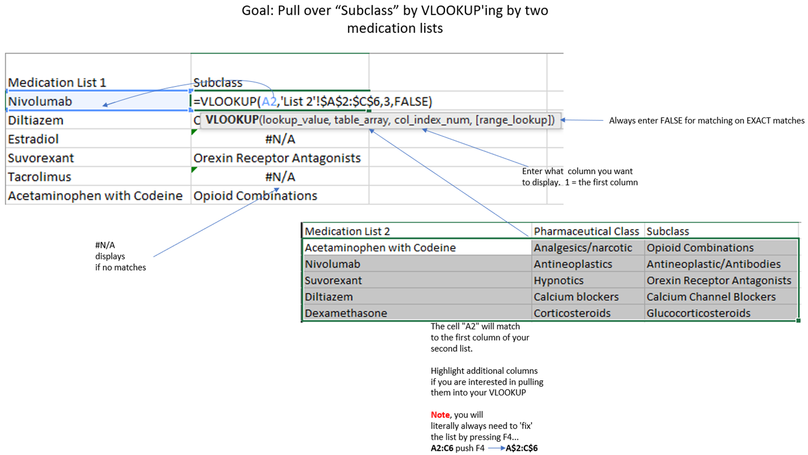
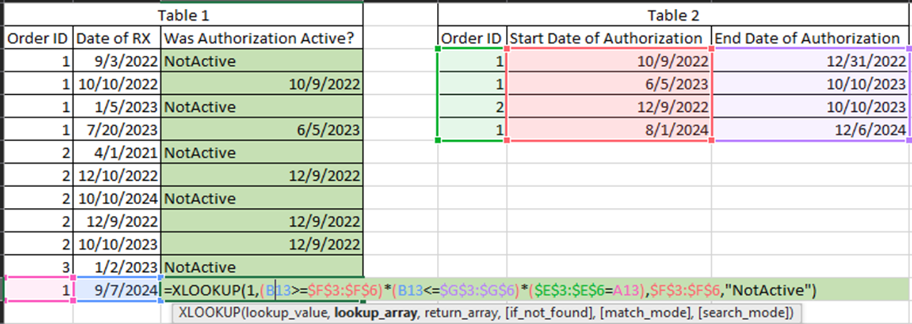
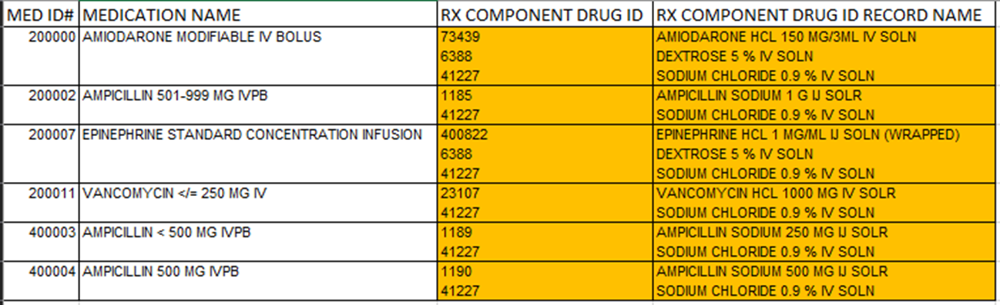
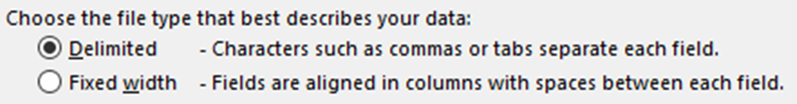
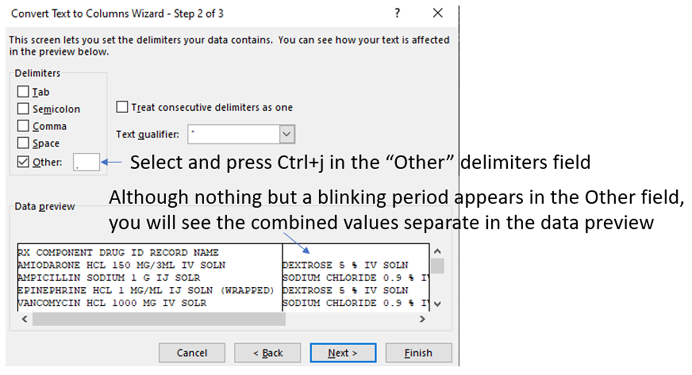
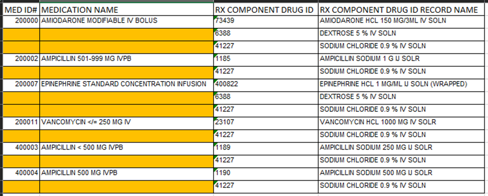
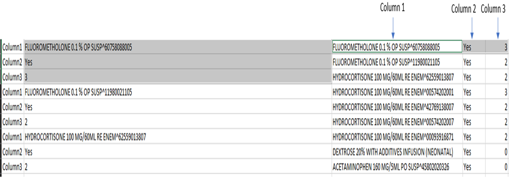
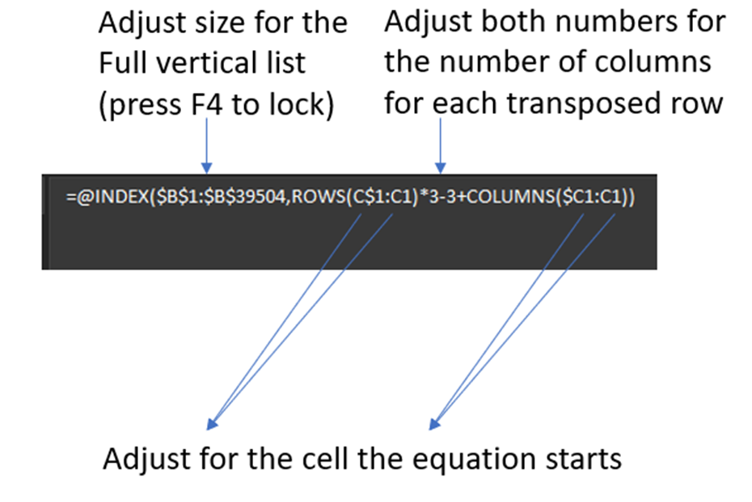

Microsoft Excel Essentials
Introduction
This resource provides a list of useful MS Excel concepts and examples that have come up over the years for various data challenges. These are real use cases that have came up in my personal pharmacy informatics practice.
VLOOKUP
Description: The VLOOKUP is an essential tool for data handling, particularly in the finicky world of reporting, where it is not uncommon to get data extracts that do not have all the columns necessary. Getting 100% of what you are looking for from a report writer is not practical or always possible. This is not an uncommon issue in the health care IT arena. Thus, combining data from a separate Excel that has the necessary column(s) can be a lifesaver. That is if there is a matching column that can tie together data from the other Excel sheet/workbook/list exactly. I effectively call this functionality a “poor person’s” query. And although it does the trick, a VLOOKUP is much more resource intensive than joining tables in a real relational database.
Example: This simple example works for any matching of one list/sheet/workbook to another and pulling any available values from the specified column.
VLOOKUP Figure
VLOOKUP sample
XLOOKUP
Description: a XLOOKUP is very similar to VLOOKUP in the way that a cell from one list/sheet/workbook is matching to a second list/sheet/workbook’s cell, and then pulls in the value from a column in the second list which is aligned to the row from the matching cell. The XLOOKUP is in principle an even simpler VLOOKUP, although I find it more effective in doing more advanced comparisons, as provided in the example below.
Example: An example use case where I have found the XLOOKUP useful is when I am determining if a particular item (like a prescription fill) was filled within a date window (like an authorization date range). The figure and sample show two separate tables and the use of XLOOKUP to determine if the date of the prescription (table 1) was between the date range in the rows listed in table 2.
XLOOKUP Figure
XLOOKUP sample
Convert text to columns using a carriage return delimiter
Description: In situations where a record has multiple responses of data in columns that are not broken into multiple rows, rather are stacked in one cell via a carriage return (i.e. delimited by Alt+enter).
Example: The figure below displays medication mixture records and the available multiple drug ingredients. In this example, the multiple ingredients are combined in one row, delimited by a carriage return (or defined by Excel as Alt+enter).
Example sheet
To split these combine values on the same row using “Text to Columns”, first highlight the column, select “Text to Columns” under Data in the Toolbar.
Select the “Delimited” option in the Text to Columns wizard.
In the next step of the wizard, select and press Ctrl+j in the Other option. Although it does not appear to display much in the field, the process does work.
In the final step, select finish to complete the parsing. Do note that separating these values will require empty real estate next to this column, otherwise there will be a warning stating that you will overwrite populated data.

Multi-response sample
Fill in blank cells between values down a column
Description: In situations where a record has multiple responses of data in columns that break into multiple rows, there are gaps of blank cells in the other columns when exporting data. This makes filtering and handling the data challenging.
Example: This example is essentially the reverse problem of the previous example of combining multiple responses in one row. In this example, the multiple responses are split out in separate rows, but the other single response values do not fill the additional rows.
Example sheet
To fill in the blanks, there are three simple steps.
- Select the impacted column
- Go to Toolbar->Home->Find & Select->Go to Special->blanks
- All of the blank cells become highlighted. Touch nothing but the = key and the up arrow. Follow that with Ctrl+enter and all blanks will populate the cell above.

Multi-response sample
INDEX Function
Description: Transpose columns listed vertically to horizontally using the INDEX function.
Example: Here is an extract of a list of medications that lists the columns in vertically down a single column. This is not a very useful way to work the data! The figure and sample provide a detailed use of the INDEX function to transpose the columns horizontally.
Example sheet
Illustration of the equation
GIF of steps

Index sample